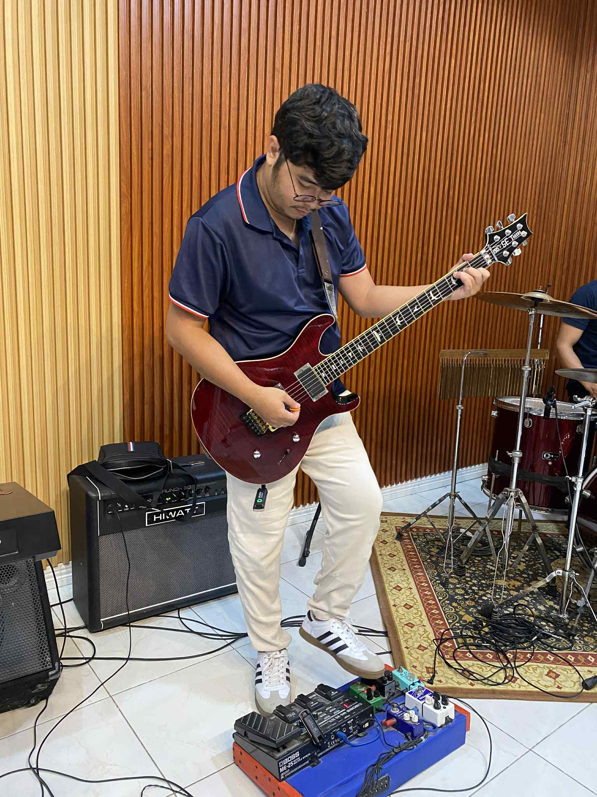
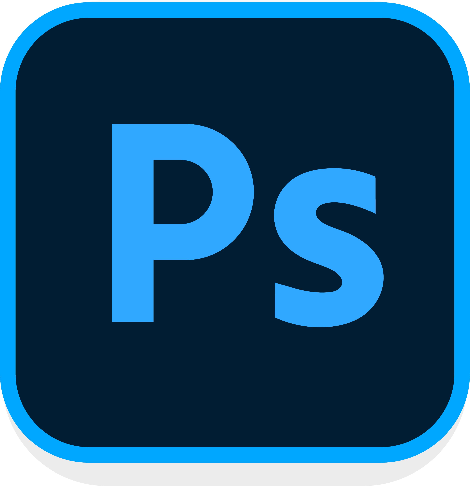
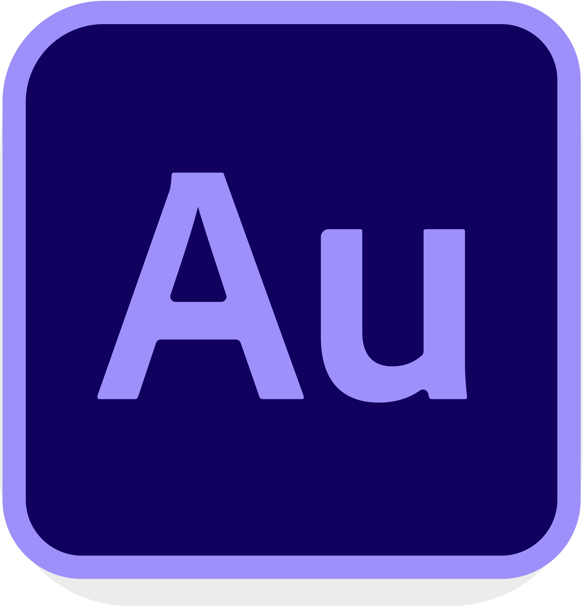
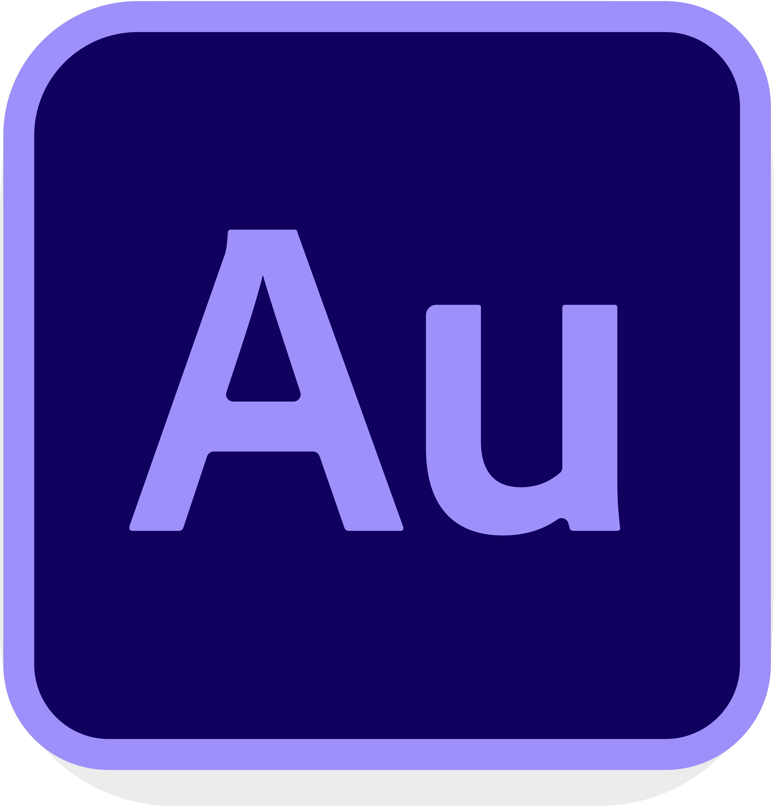
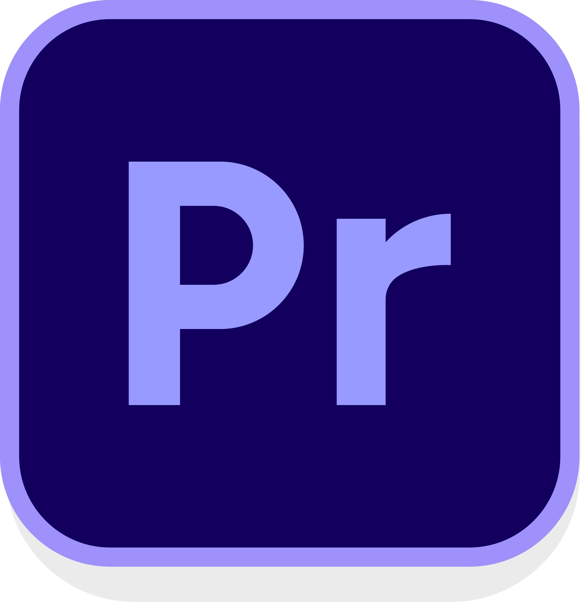
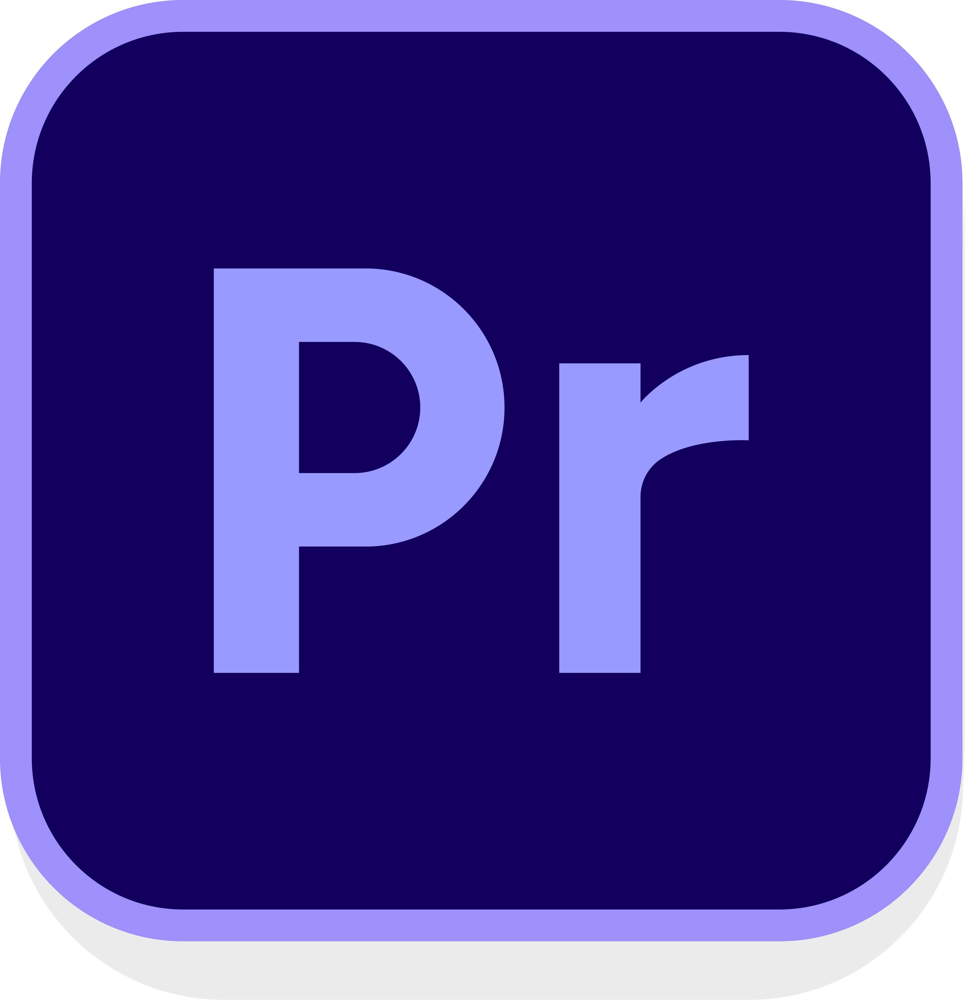

×

🌟About Me
I am an IT student who enjoys learning technology, building projects,
and improving my programming skills.
🌟Education
- Bachelor of Science in Information Technology
- Pampanga State University
- 2025 - Present
- Maliwalo National High School
- 2006 - 2010
- Maliwalo Central Elementary School
- 2000 - 2006
🌟Skills
- HTML
- Basic Programming
- GitHub
- VS Code
- Adobe Creative Suite
- Sketchup 3D
🌟 Applications and Tools I used before:


 

 



🌟Portfolio & Projects
Link: John Lester Creatives
👨💻 MIDTERMS
👨💻 MIDTERM LAB TASK 1:
Resume Writing using HTML
👨💻 MIDTERM LAB TASK 2:
List and Table HTML
👨💻 MIDTERM LAB TASK 3:
Forms
👨💻 MIDTERM LAB TASK 4:
Image Mapping
Additional projects to be added...
🌟 Hobbies:
- Playing musical instruments. 🎸
- Exploring new life and creative skills. 🧠
- Watching drum and guitar covers. 🎸🥁
- Learning Arduino-based circuit design. 📟
- Listening to my favorite music. 🎸
- Making designs that feel both modern and meaningful. 🎨
🛠️ Skills:
- Web Design
- Print Design
- 3D Modeling
- Building Wiring and Electronics Projects
- CRM
🧠 Soft Skills:
- 🎯 Attention to Detail
- Able to focus deeply on typography, layout, color, and consistency.
- 🧠 Thoughtful Problem Solving
- Approaches design challenges with analysis and intention, not guesswork.
- 👂 Active Listening
- Carefully understands client or team requirements before executing designs.
- 🗂 Time Management
- Efficiently manages time and deadlines in both personal and professional projects.
- 🤝 Collaboration (Low-Noise, High-Impact)
- Works well in small teams, async environments, and remote setups.
🌟 Reach me at: